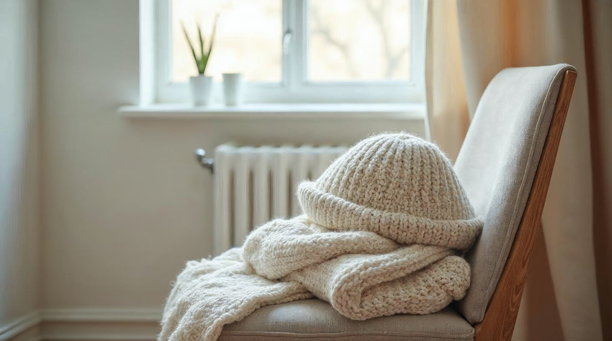
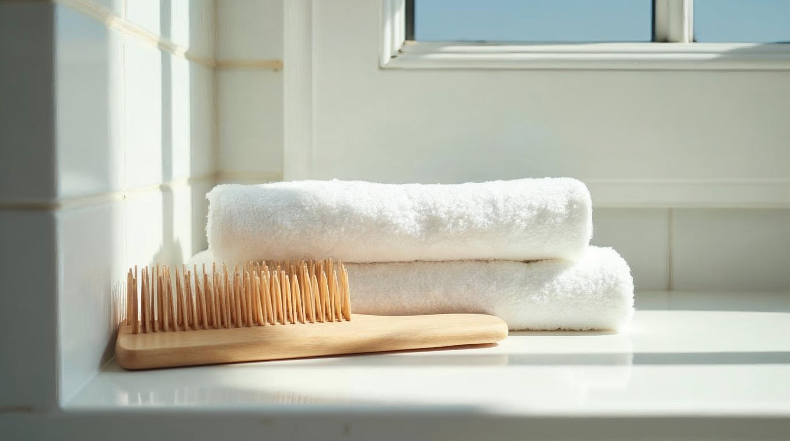
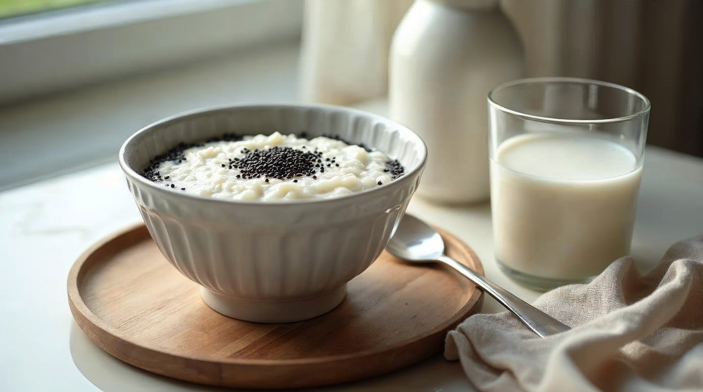
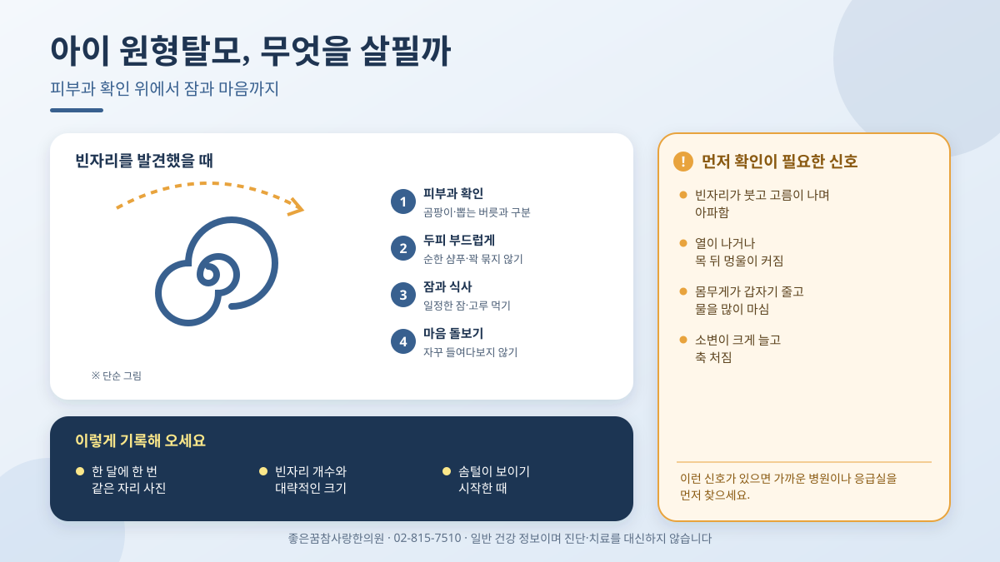

이종호 한의사 감수좋은꿈참사랑한의원 대표원장 (한의사 면허번호 19769)발행 2026-11-26 · 수정 2026-11-27
이 글의 차례
저녁에 아이 머리를 감기다가 손끝에 이상한 느낌이 닿습니다. 머리카락을 헤쳐 보니 뒤통수 한쪽에 오백 원짜리 동전만 한 자리가 매끈하게 비어 있어요. 아프지도 가렵지도 않다는데, 언제부터 이랬는지도 모르겠습니다. 그날 밤 휴대폰으로 '아이 원형탈모'를 검색하며 잠을 못 이루시는 거죠.
어른도 머리카락이 빠지면 마음이 무너지는데, 아이 머리에서 빈자리를 발견했을 때의 놀라움은 훨씬 크실 거예요. 내가 뭘 잘못 먹였나, 아이가 무슨 스트레스를 받았나, 친구들이 놀리지는 않을까. 걱정이 한꺼번에 몰려오죠.
제가 제일 먼저 드리고 싶은 말은 이거예요. 원형탈모는 부모님이 잘못해서 생기는 병이 아니에요. 몸의 면역이 잠시 머리카락 뿌리를 낯선 것으로 여기고 공격하면서 생기는 거거든요.
그러니까 사실은 '머리카락이 빠졌다'는 것과 '머리카락 뿌리가 없어졌다'는 건 다른 얘기예요. 뿌리 자체가 사라지는 게 아니라 잠시 쉬는 상태가 되는 경우가 많아서, 시간이 지나며 다시 머리카락이 나는 아이가 많아요. 겨울에 잎을 떨군 나무도 뿌리는 땅속에서 다음 계절을 기다리고 있는 것처럼요.
다만 아이 머리에 생긴 빈자리가 모두 원형탈모는 아니에요. 곰팡이 감염이나 머리를 뽑는 버릇, 너무 꽉 묶는 머리처럼 다른 이유도 있어서 피부과에서 정확히 확인하는 게 먼저예요. 그 위에서 아이의 잠과 마음, 생활을 함께 살피는 얘기를 해 볼게요.

소아 원형탈모는 어떤 모습인가요
원형탈모는 머리카락이 동그랗거나 타원형으로 빠진 자리가 생기는 모습입니다. 빈자리의 피부는 대개 매끈하고 붉거나 비늘이 일어나지 않으며, 아프거나 가렵지 않은 경우가 많습니다. 그래서 아이 스스로는 모르고 지내다 부모님이나 미용실에서 우연히 발견하는 일이 흔합니다.
빈자리 가장자리를 자세히 보면 짧고 끝이 가늘어지는 머리카락이 보이기도 합니다. 이런 머리카락은 쉽게 뽑히고, 빈자리가 넓어지고 있다는 표시일 수 있습니다. 반대로 빈자리 안에 가늘고 하얀 솜털 같은 머리카락이 올라오기 시작하면 다시 나는 과정에 들어섰다는 신호로 볼 수 있습니다.
빈자리는 하나로 끝나기도 하고, 여러 개가 생기거나 서로 합쳐져 넓어지기도 합니다. 드물게 머리 전체나 눈썹, 속눈썹까지 빠지는 경우도 있습니다. 손톱에 작은 홈이 점점이 생기는 모습이 함께 보이기도 해서, 진료실에서는 손톱도 함께 살펴봅니다.
왜 아이에게 원형탈모가 생길까요
원형탈모의 중심에는 면역의 착각이 있습니다. 평소에는 머리카락 뿌리를 건드리지 않던 면역 세포가 어떤 계기로 그곳을 공격하면서, 머리카락이 자라는 단계가 갑자기 멈추고 빠지게 됩니다. 이 착각을 부르는 계기는 한 가지로 딱 잘라 말하기 어렵지만, 함께 이야기되는 것들이 있습니다.
- 가족 가운데 원형탈모가 있었던 경우
- 아토피 피부염이나 알레르기 비염, 천식이 함께 있는 경우
- 갑상선 질환 같은 다른 면역 관련 질환이 있는 경우
- 큰 감기나 열성 질환을 앓은 뒤
- 이사, 입학, 동생이 생김처럼 큰 변화나 긴장이 이어진 뒤
- 잠이 부족하고 생활 리듬이 오래 흔들린 경우
긴장이나 스트레스가 원형탈모의 직접적인 원인이라고 단정하기는 어렵습니다. 하지만 큰 변화를 겪은 뒤 빈자리가 생기거나 넓어지는 아이를 진료실에서 종종 만납니다. 그래서 저는 아이의 마음과 생활을 함께 여쭙되, 부모님이 '내가 아이를 힘들게 했나' 하고 자책하시지 않도록 조심스럽게 이야기를 나눕니다.
원형탈모와 헷갈리기 쉬운 경우는 무엇인가요
첫째는 두피 곰팡이 감염인 두부 백선입니다. 빈자리에 비늘 같은 각질이 일어나거나, 붉고 가렵거나, 머리카락이 두피 높이에서 끊어진 검은 점처럼 보입니다. 반려동물이나 다른 아이에게서 옮기도 하며, 먹는 약으로 치료해야 하는 경우가 많아 피부과 진료가 꼭 필요합니다.
둘째는 머리카락을 스스로 뽑는 버릇인 발모벽입니다. 빈자리가 반듯한 동그라미가 아니라 모양이 불규칙하고, 그 안에 길이가 제각각인 머리카락이 섞여 있는 것이 특징입니다. 주로 아이가 잘 쓰는 손 쪽, 책을 보거나 화면을 볼 때 손이 닿는 자리에 생깁니다. 이 경우 두피보다 아이의 긴장과 습관을 함께 살피는 것이 중요합니다.
셋째는 머리를 너무 꽉 묶거나 같은 방향으로 오래 당겨 생기는 견인성 탈모입니다. 이마 가장자리나 묶는 자리를 따라 머리숱이 줄어듭니다. 묶는 방식만 바꿔도 다시 차오르는 경우가 많으니, 머리를 자주 묶는 아이라면 한 번 살펴보세요.
다시 머리카락이 날까요
부모님이 가장 먼저 물으시는 질문입니다. 빈자리가 작고 개수가 적은 원형탈모는 몇 달에서 일 년 사이에 다시 머리카락이 나는 경우가 많습니다. 처음에는 가늘고 하얀 머리카락이 나다가 점차 굵어지고 색이 짙어집니다.
다만 언제 다시 날지는 아이마다 다르고, 한 자리가 차오르는 동안 다른 자리에 새로 빈자리가 생기기도 합니다. 빈자리가 넓거나 여러 개이거나, 어린 나이에 시작했거나, 아토피가 함께 있는 경우에는 시간이 더 걸리거나 되풀이되는 경우도 있습니다. 그래서 피부과에서 정기적으로 경과를 확인받으시는 것이 좋습니다.
기다리는 시간이 길게 느껴지실 수 있습니다. 그 시간 동안 아이가 잘 자고, 잘 먹고, 머리 때문에 위축되지 않도록 돕는 것이 부모님이 할 수 있는 가장 중요한 일입니다.
피부과에서는 어떤 진료를 받게 되나요
피부과에서는 먼저 빈자리의 모습과 두피, 머리카락 끝을 확대해 살펴보고, 필요하면 곰팡이 검사나 혈액 검사로 다른 원인이 없는지를 확인합니다. 갑상선 기능이나 빈혈처럼 함께 살펴볼 것이 있는지도 이때 확인하는 경우가 많습니다.
치료는 빈자리의 크기와 개수, 아이의 나이에 따라 달라집니다. 바르는 약으로 지켜보기도 하고, 빈자리에 주사를 놓거나 다른 방법을 쓰기도 합니다. 어떤 치료를 할지, 얼마나 지켜볼지는 피부과 선생님과 충분히 상의해 정하시면 됩니다.
치료를 시작하고 바로 머리카락이 나지 않는다고 실망하지 마세요. 머리카락은 한 달에 1센티미터 남짓 자라는 데다, 쉬고 있던 뿌리가 다시 움직이기까지도 시간이 걸립니다. 몇 달 단위로 사진을 비교해 보시는 편이 마음을 덜 흔듭니다.
가족은 어떻게 함께하면 좋을까요
아이의 원형탈모를 두고 가족 사이에 의견이 갈리기도 합니다. 누구는 당장 이것저것 해 봐야 한다고 하고, 누구는 그냥 두면 난다고 합니다. 이럴 때는 피부과 진료에서 들은 내용을 가족이 함께 나누고, 아이 앞에서는 같은 이야기를 해 주시는 것이 좋습니다.
할머니나 친척이 아이를 만날 때마다 머리를 들춰 보며 걱정하는 말을 하면, 아이는 자기 머리가 큰 문제라고 느끼기 쉽습니다. 가족에게 미리 부탁드려 아이 앞에서는 머리 이야기를 줄여 달라고 해 두세요.
아이 마음은 어떻게 돌봐 주나요
어린아이는 빈자리에 크게 신경 쓰지 않는 경우가 많지만, 조금 큰 아이는 친구들의 시선을 의식하기 시작합니다. 모자를 벗지 않으려 하거나, 미용실에 가기 싫어하거나, 거울을 자주 들여다보기도 합니다.
아이에게는 원형탈모가 옮는 병이 아니고, 아이가 뭘 잘못해서 생긴 것도 아니며, 많은 경우 다시 머리카락이 난다는 것을 아이 눈높이에 맞춰 설명해 주세요. 빈자리를 자꾸 들여다보거나 만지는 것은 부모님도 아이도 줄이시는 편이 좋습니다. 부모님의 불안한 눈길은 아이에게 생각보다 빨리 전해집니다.
머리 모양을 바꿔 빈자리가 덜 보이게 하는 것도 아이 마음을 편하게 하는 방법입니다. 필요하다면 담임 선생님께 미리 알려 두시면 친구들 사이에서 생길 수 있는 말을 살펴 주실 수 있습니다.

두피와 머리카락은 어떻게 관리하나요
원형탈모가 있다고 해서 머리를 자주 감기지 않을 필요는 없습니다. 순한 샴푸로 평소처럼 감기고, 손끝으로 부드럽게 씻어 주세요. 손톱으로 세게 긁거나 빈자리를 문지르는 것은 피해 주세요.
머리를 말릴 때는 뜨거운 바람을 가까이 대지 말고, 미지근한 바람으로 거리를 두고 말려 주세요. 머리를 꽉 묶거나 머리띠로 세게 누르는 것도 당분간 줄이시는 편이 좋습니다. 인터넷에서 보는 발모제나 어른용 탈모 제품을 아이에게 쓰는 것은 권하지 않습니다.
먼저 이렇게 여쭙니다
처음 오시면 대략 이런 순서로 여쭙니다.
- 빈자리는 언제 처음 발견했고, 크기와 개수는 어떻게 변하고 있나요?
- 빈자리가 가렵거나 각질이 일거나 붉은가요?
- 눈썹이나 속눈썹도 빠지나요? 손톱에 변화가 있나요?
- 아토피나 비염, 천식이 있나요? 가족 가운데 원형탈모가 있었나요?
- 빈자리가 생기기 전후로 큰 감기나 생활의 변화가 있었나요?
- 머리를 만지거나 뽑는 버릇이 있나요?
잠드는 시각과 밤에 깨는 횟수, 입맛과 편식, 대변도 함께 여쭙습니다.
일상에서 먼저 해 볼 수 있는 것
원형탈모를 직접 멈추게 하는 생활 방법은 없지만, 아이 몸과 마음이 편안한 상태를 만드는 일은 집에서도 할 수 있습니다.
- 잠드는 시각을 일정하게 맞추고 충분히 재우기
- 고기, 생선, 달걀, 콩, 채소를 고루 먹이고 단 간식 줄이기
- 순한 샴푸로 부드럽게 감기고, 머리를 꽉 묶지 않기
- 빈자리를 자꾸 들여다보거나 만지지 않기
- 아이가 좋아하는 놀이와 바깥 활동 시간을 넉넉히 두기
- 한 달에 한 번 같은 조명에서 빈자리 사진 찍어 두기
아토피가 함께 있는 아이라면 피부 보습과 가려움 관리를 꾸준히 이어 가시는 것도 중요합니다. 몸의 다른 곳에서 면역이 예민해져 있으면 두피에도 영향을 줄 수 있기 때문입니다.
한의원에서 함께 살필 수 있는 경우
- 원형탈모와 함께 잠이 얕고 자주 깨는 경우
- 큰 변화나 긴장 뒤에 빈자리가 생기거나 넓어진 경우
- 아토피나 비염처럼 다른 면역 관련 불편이 함께 있는 경우
- 입이 짧고 편식이 심해 고루 먹지 못하는 경우
- 피부과 치료를 받으며 아이의 전체 컨디션을 함께 보고 싶은 경우
좋은꿈참사랑한의원에서는 모든 분의 맥을 먼저 짚고, 두피와 손톱, 혀를 살피며 잠과 입맛, 대변, 마음의 긴장을 여쭙습니다. 진찰한 내용을 바탕으로 생활에서 바꿔 볼 것 하나와 함께 아이 몸에 맞는 관리를 상의합니다.
한약을 상의할 때는 아이가 바르거나 먹는 약을 모두 확인하고 신중하게 정합니다. 침을 무서워하는 아이에게 억지로 하지 않고, 아이가 받아들일 수 있는 방법부터 찾습니다. 원형탈모의 진단과 치료는 피부과와 나란히 가시면 됩니다.

이렇게 기록해 오시면 상담이 쉬워집니다
원형탈모는 변화가 천천히 오기 때문에 기록이 없으면 나아지는지 아닌지 알기 어렵습니다. 한 달에 한 번, 같은 자리를 같은 조명에서 찍어 두세요.
- 한 달에 한 번 같은 조건에서 찍은 빈자리 사진
- 빈자리의 개수와 대략적인 크기
- 새로 나는 솜털이 보이기 시작한 때
- 잠든 시각과 밤에 깬 횟수
- 큰 감기나 생활의 변화가 있었던 때
- 피부과 치료를 받은 날과 바른 약
사진을 나란히 놓으면 눈으로는 알아채기 어려웠던 작은 변화가 보입니다. 그 변화가 부모님과 아이 모두에게 기다릴 힘이 되어 줍니다.
기다리는 시간을 함께
아이 머리의 빈자리는 부모님 마음에도 빈자리를 만들어요. 그래도 그 자리에 자책을 채우지 않으셨으면 해요. 원형탈모는 부모님 탓이 아니고, 많은 아이가 시간이 지나며 다시 머리카락을 되찾거든요.
기다리는 동안 매일 그 자리를 들여다보게 되는 건 원래 그래요. 그런데 부모님이 들여다보는 눈길을 아이도 다 느껴요. 아이가 자기 머리를 걱정거리로 여기지 않게, 어른들이 한 걸음 물러서 주시는 것도 돌봄이에요.
아이 몸을 살피는 건 제가 맡을게요. 대신 하나만 부탁드려요. 빈자리를 매일 들여다보는 대신 한 달에 한 번 사진 한 장만 찍어 주세요. 딴 건 하시던 대로 편하게 하셔도 돼요.
다음에 오시면 사진을 함께 펼쳐 놓고, 아이의 잠과 마음이 어떻게 지내고 있는지부터 여쭐게요. 궁금하신 건 그날 아무거나 물어보세요.
이런 증상은 먼저 확인이 필요합니다
- 빈자리가 붓고 고름이 나며 아파하고, 열이 나거나 목 뒤 멍울이 커지는 경우
- 머리 빠짐과 함께 몸무게가 갑자기 줄고 물을 많이 마시며 소변이 크게 늘어 축 처지는 경우
이런 신호가 있으면 한의원보다 가까운 병원이나 응급실을 먼저 찾으세요.
함께 읽으면 좋은 글
- 동전 모양으로 머리카락이 빠지는 원형 탈모는 어떻게 살피나요?
- 아이 피부가 건조하고 밤마다 긁어서 깨는 소아 아토피 피부염은 어떻게 살피나요?
- 아이가 잠투정이 심하고 자다가 자주 깰 때는 어떤 점을 살펴보나요?
- 아이가 눈을 자꾸 깜빡이거나 킁킁거리는 틱이 보일 때 부모는 무엇을 살피나요?
- 아이가 밥을 몇 숟가락 먹고 안 먹으려 할 때는 무엇을 먼저 살피나요?

여쭙는 것
- 빈자리는 언제 처음 발견했고, 크기와 개수는 어떻게 변하고 있나요?
- 빈자리가 가렵거나 각질이 일거나 붉은가요?
- 눈썹이나 속눈썹도 빠지나요? 손톱에 변화가 있나요?
생활에서 해 볼 것
- 잠드는 시각을 일정하게 맞추고 충분히 재우기
- 고기, 생선, 달걀, 콩, 채소를 고루 먹이고 단 간식 줄이기
- 순한 샴푸로 부드럽게 감기고, 머리를 꽉 묶지 않기
한의원에서 함께 살필 것
- 원형탈모와 함께 잠이 얕고 자주 깨는 경우
- 큰 변화나 긴장 뒤에 빈자리가 생기거나 넓어진 경우
- 아토피나 비염처럼 다른 면역 관련 불편이 함께 있는 경우
먼저 확인이 필요한 신호
- 빈자리가 붓고 고름이 나며 아파하고, 열이 나거나 목 뒤 멍울이 커지는 경우
- 머리 빠짐과 함께 몸무게가 갑자기 줄고 물을 많이 마시며 소변이 크게 늘어 축 처지…
한눈에 보는 표
| 구분 | 핵심 |
|---|---|
| 여쭙는 것 | 빈자리는 언제 처음 발견했고, 크기와 개수는 어떻게 변하고 있나요? 빈자리가 가렵거나 각질이 일거나 붉은가요? |
| 생활에서 해 볼 것 | 잠드는 시각을 일정하게 맞추고 충분히 재우기 고기, 생선, 달걀, 콩, 채소를 고루 먹이고 단 간식 줄이기 |
| 한의원에서 함께 살필 것 | 원형탈모와 함께 잠이 얕고 자주 깨는 경우 큰 변화나 긴장 뒤에 빈자리가 생기거나 넓어진 경우 |
| 먼저 확인이 필요한 신호 | 빈자리가 붓고 고름이 나며 아파하고, 열이 나거나 목 뒤 멍울이 커지는 경우 머리 빠짐과 함께 몸무게가 갑자기 줄고 물을 많이 마시며 소변이 크게 늘어 축 처지는 경우 |
자주 묻는 질문
아이 원형탈모는 스트레스 때문인가요?
원형탈모는 면역이 머리카락 뿌리를 잠시 공격하면서 생기며, 스트레스 하나를 원인으로 단정하기는 어렵습니다. 다만 큰 변화 뒤에 생기거나 넓어지는 경우가 있어 아이의 마음과 생활도 함께 살핍니다.
원형탈모는 다른 아이에게 옮나요?
원형탈모는 옮는 병이 아닙니다. 다만 곰팡이 감염인 두부 백선은 옮을 수 있고 모습이 비슷할 수 있어, 피부과에서 먼저 확인받으시길 권합니다.
머리를 짧게 자르면 더 빨리 나나요?
머리 길이가 다시 나는 속도에 영향을 준다고 보기는 어렵습니다. 빈자리가 덜 보이게 하거나 아이가 편한 쪽으로 머리 모양을 정하시면 됩니다.
피부과 치료를 받으면서 한의원 진료를 함께 받아도 되나요?
피부과 치료는 그대로 이어 가시면서 함께 상의하실 수 있습니다. 바르거나 먹는 약을 알려 주시면 확인하고 신중하게 정합니다.
아이가 머리카락을 자꾸 뽑는데 원형탈모인가요?
스스로 머리카락을 뽑는 버릇이라면 빈자리 모양이 불규칙하고 길이가 다른 머리카락이 섞여 있는 경우가 많습니다. 두피보다 아이의 긴장과 습관을 함께 살펴보는 것이 좋습니다.
좋은꿈참사랑한의원은 재진 때 지난번 이야기부터 이어서 여쭙니다. 진료시간과 예약은 오시는 길에서 확인하세요.
어디서 상담받을 수 있나요?
좋은꿈참사랑한의원은 서울 동작구 만양로2길 2 신성빌딩 3층·5층(서울 동작구 상도동, 7호선 상도역 3번 출구 근처)에 있습니다. 한의사 3명(이종호 대표원장, 조영기 수석진료원장, 정원영 진료원장)이 진료합니다. 진료시간은 평일 09:30~20:00(점심 13:00~14:00), 토·일·공휴일 09:30~15:00이며, 방문 전 전화로 확인을 권합니다. 예약은 네이버 예약, 카카오톡 상담, 전화 02-815-7510로 받습니다.
이 글은 일반적인 건강 정보이며 개인의 진단이나 치료를 대신하지 않습니다. 증상이 있거나 복용 중인 약이 있다면 진료를 통해 확인하세요. 치료 효과는 개인마다 다를 수 있습니다.
작성 기준: 일반적으로 알려져 있는 건강 정보를 참고해 정리했습니다(대표원장 감수). 증상 기록은 1~2주 동안 하루 1회, 비슷한 시간에 적어 오시면 지난 상태와 비교하기 쉽습니다.